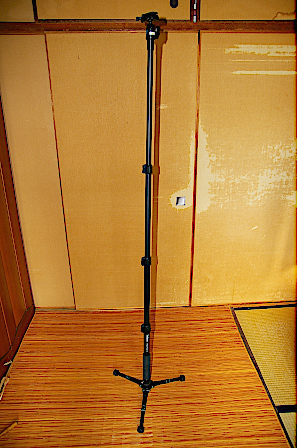
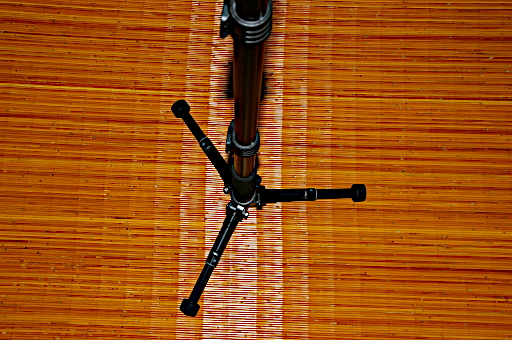
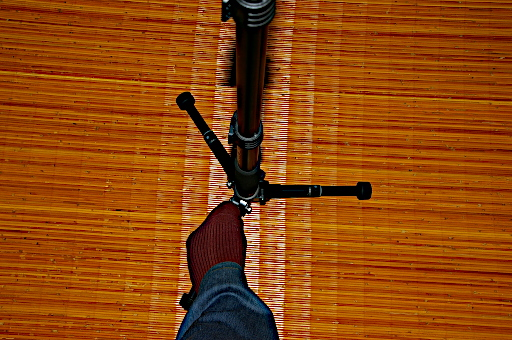
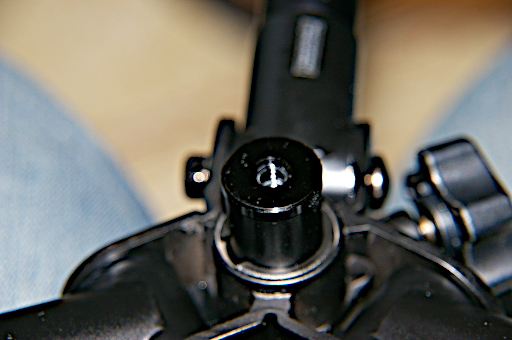
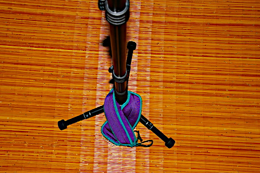

Velbon Pole Pod III が不安定だという話は以前書きました。カメラを乗せて自立させるのは危険だとも書きました。それは下の写真を見れば一目瞭然です。

でもですねやはり体幹機能障害のある私としましては風等でポールが揺れるのは仕方がないとしても、是非とも最低カメラが乗った状態で自立はしていただきたい。そんなことを思っているわけです。
まぁ Pole Pod の頼りなさはこの頼りない脚元にあるわけです。

足で踏むことで自立させるということも考えました。

ですがこの方法だと足が乗っていない 2 本の Pole Pod の脚が浮き気味になりかえって不安定になります。それどころか私には体幹機能障害があって躰が不安定なので逆に Pole Pod が揺れ続けて止まることがありません。この方法はダメです。
で他の方はこの不安定さをどうしているのかとネットで検索してみると Pole Pod EX のケースですが改造されている方がいらっしゃいました。でもさすがにここまでの工作は自分にはできません。
Velbon Pole Pod III の脚元は三脚なのだから K&F Concept KF-TM2324 のセンターポール最下部のように重りをつけるフックを取り付けられないだろうかと Pole Pod をひっくり返してみました。すると 1/4 規格の穴が開いています。

これは勝利したんじゃないかと思いました。センターポール用のフックを検索するまでは。センターポール用のフックのネジサイズって 1/4 はなくて 3/8 のサイズしかないんですね。落胆したのはいうまでもありません。Velbon さん、ここに取り付けるフックを是非とも発売して下さい。お願いします。
こうなるとやっぱり Pole Pod の脚になんらかの重さをかけるしかありません。でここで思い出しました。K&F Concept KF-TM2324 のセンターポールにぶら下げることにしたアンクルウェイトです。これを Pole Pod の脚に乗せればいいじゃん。

できればもう 2 セット欲しいところですが、この状態で PENTAX *ist DL2 にシグマ 18-200mm F3.5-6.3 を取り付けた状態でも自立させることができました。
しばらくはこれで行こうと思います。不安がでればウェイトを増やそうと思います。Velbon Pole Pod III 導入の目的は軽量化ではなく、狭い場所や人の多い場所で三脚のように場所をとって他の人に迷惑をかけないことなのでこれでいいのです。
それと忘れてはならないのは三脚部分が安定しても、ポール自体は揺れるということです。指でわずかに触れるだけでも揺れることに変わりはありません。揺れが収まるまでシャッターを切るのは我慢しましょう。当然ボディーのシャッターボタンを押すのではなくレリーズスイッチでシャッターを切るのです。